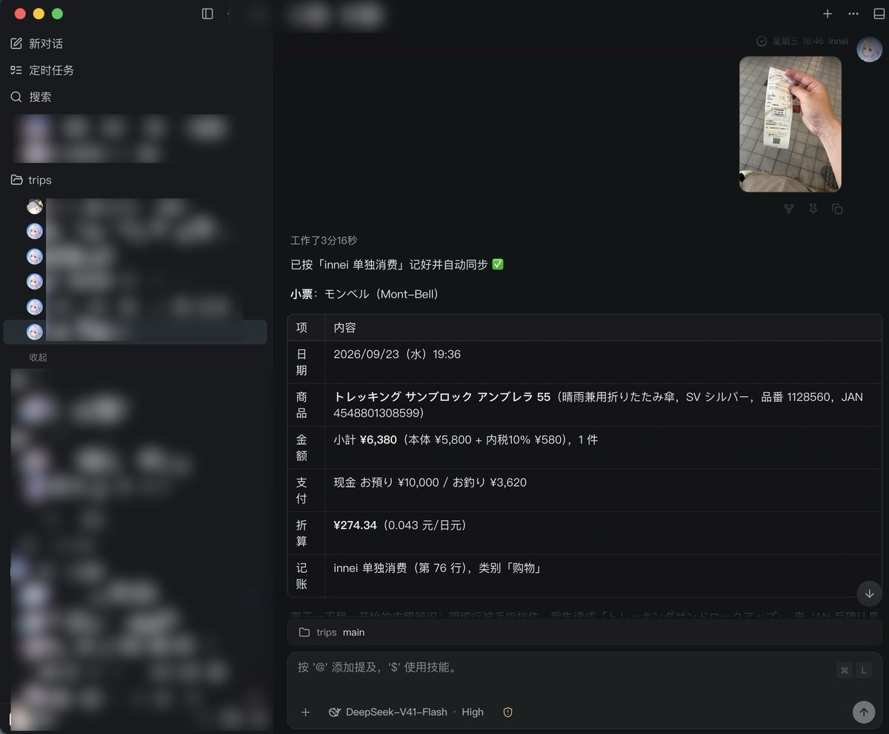
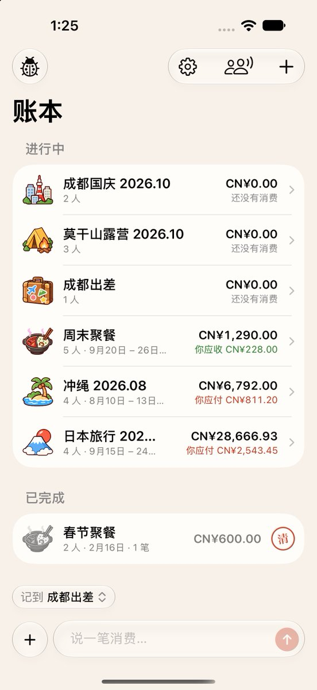

其实咱感觉更需要的是是对接AI的pipeline，而不是作114514个agent。
之前做 Journal 的时候，我主要考虑的是输出，也就是把记录喂ai，强大的 Gemini。当时我并没有让 AI 深度介入系统，而是生成了人类也能读懂的内容，并渲染成卡片，并调用分享功能直接给到 Gemini，当然也可以是 GPT，或是社媒……
但图中展示的是“输入”端，这在交互上的难度要大得多，需要好好琢磨了。如果简单粗暴地做成 MCP，用户体验将会非常糟糕。

之前做 Journal 的时候，我主要考虑的是输出，也就是把记录喂ai，强大的 Gemini。当时我并没有让 AI 深度介入系统，而是生成了人类也能读懂的内容，并渲染成卡片，并调用分享功能直接给到 Gemini，当然也可以是 GPT，或是社媒……
但图中展示的是“输入”端，这在交互上的难度要大得多，需要好好琢磨了。如果简单粗暴地做成 MCP，用户体验将会非常糟糕。


在上次旅游的时候，发现了记账和事后分账的一些痛点。所以回来之后，我就开始构思如何去设计一个完全由 AI Agent 驱动的记账软件。
图一是当时跑通的 agent 流程。
图二是正在开发的 app https://t.co/pj0IP9IRAZ
图一是当时跑通的 agent 流程。
图二是正在开发的 app https://t.co/pj0IP9IRAZ